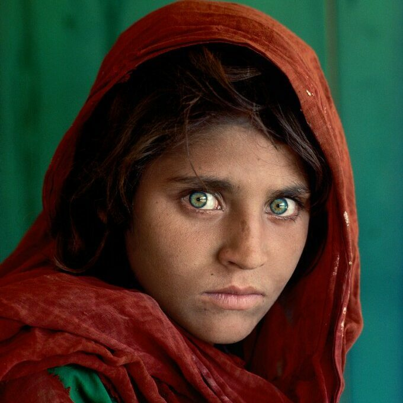

Fotografia
A jovem garota afegã de olhos verdes de Steve McCurry

Certamente você já viu o olhar da garota afegã de olhos verdes.
Produzida em junho de 1984, a foto ganhou notavelmente a primeira página da famosa National Geographic.
O mundo então descobre Sharbat Gula, uma garota refugiada de 12 anos no Paquistão.
A expressividade de seus olhos marcou o mundo todo.